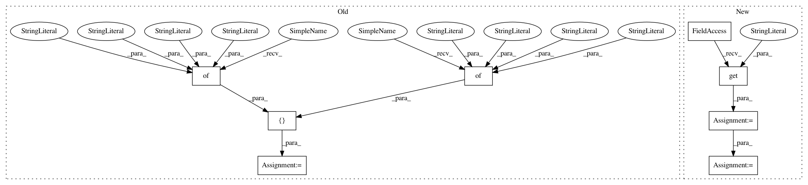

67f6d47d9e61f28d455319c868c38fbc11e73366,flow/scenarios/bridge_toll/gen.py,BBTollGenerator,specify_connections,#BBTollGenerator#Any#,39
Before Change
// {"from": "4", "to": "5", "fromLane": "6", "toLane": "3"},
// {"from": "4", "to": "5", "fromLane": "7", "toLane": "4"}]
// return conn
conn = [{"from": "3", "to": "4", "fromLane": "0", "toLane": "0"},
{"from": "3", "to": "4", "fromLane": "1", "toLane": "0"},
{"from": "3", "to": "4", "fromLane": "2", "toLane": "1"},
{"from": "3", "to": "4", "fromLane": "3", "toLane": "1"},
{"from": "4", "to": "5", "fromLane": "0", "toLane": "0"},
{"from": "4", "to": "5", "fromLane": "1", "toLane": "0"},]
return conn
def specify_routes(self, net_params):
After Change
See parent class
scaling = net_params.additional_params.get("scaling", 1)
conn = []
{"from": "3", "to": "4", "fromLane": "0", "toLane": "0"},
{"from": "3", "to": "4", "fromLane": "1", "toLane": "0"},
{"from": "3", "to": "4", "fromLane": "2", "toLane": "1"},
{"from": "3", "to": "4", "fromLane": "3", "toLane": "1"},
for i in range(4*scaling):
conn += [{"from": "3", "to": "4", "fromLane": str(i), "toLane": str(int(np.floor(i/2)))}]
for i in range(2*scaling):
conn += [{"from": "4", "to": "5", "fromLane": str(i), "toLane": str(int(np.floor(i/2)))}]
// conn = [{"from": "3", "to": "4", "fromLane": "0", "toLane": "0"},
In pattern: SUPERPATTERN
Frequency: 3
Non-data size: 8
Instances
Project Name: flow-project/flow
Commit Name: 67f6d47d9e61f28d455319c868c38fbc11e73366
Time: 2018-02-22
Author: eugenevinitsky@wirelessprvnat-172-16-134-167.near.illinois.edu
File Name: flow/scenarios/bridge_toll/gen.py
Class Name: BBTollGenerator
Method Name: specify_connections
Project Name: OpenMined/Grid
Commit Name: 92bb41035940965a436897f16294b6b563117efc
Time: 2021-02-21
Author: ionesiojr@gmail.com
File Name: apps/domain/src/main/core/services/infra_service.py
Class Name:
Method Name: get_workers_msg
Project Name: flow-project/flow
Commit Name: 4956dc485f78ef2b7c5f4a13f8abb7a24cfbb1bb
Time: 2018-09-16
Author: vinitsky.eugene@gmail.com
File Name: flow/scenarios/highway/gen.py
Class Name: HighwayGenerator
Method Name: specify_nodes